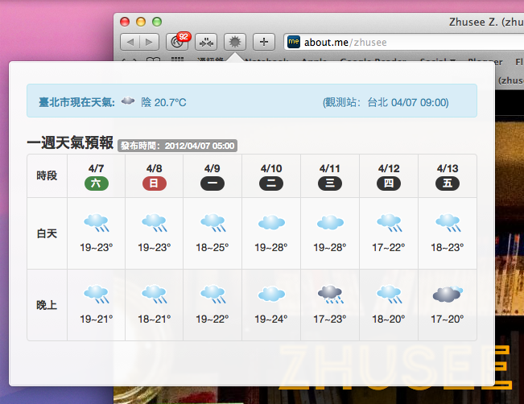

台灣氣象資訊
使用中央氣象局作為資料來源，快速查閱台灣天氣的小工具。
Fork On GitHub
下載：
Safari
ZIP
TAR

《台灣氣象資訊》使用中央氣象局的資訊作為來源，讓您可以在瀏覽器中點一下按鈕，即可獲得所在地區附近的即時觀測資訊及未來一週天氣預報。
下載
Safari 擴充套件：
http://zhusee2.github.com/TaiwanWeather/TaiwanWeather1.0.safariextz